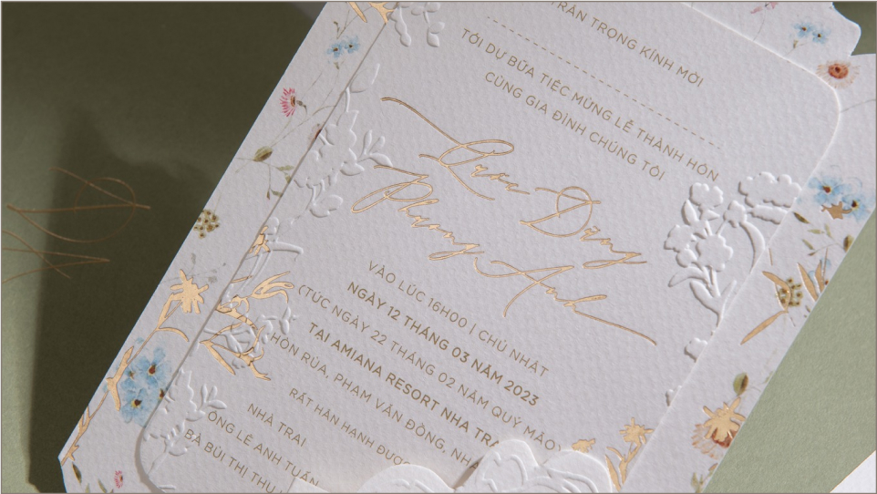

Các nghi lễ trong đám cưới:
Nét đẹp văn hóa truyền thống và tình yêu
Nét đẹp văn hóa truyền thống và tình yêu
Từ xưa tới nay, các nghi lễ trong đám cưới của người Việt Nam không chỉ là phong tục, truyền thống
mà
còn là biểu tượng của sự tôn trọng đối với ngày trọng đại. Mỗi một nghi lễ đều mang trong mình một
giá
trị đặc biệt, góp phần làm tăng thêm sự trang trọng và đặc biệt cho lễ cưới. Những giá trị truyền
thống
dân tộc này luôn là nét đẹp đầy ý nghĩa. Để hiểu rõ hơn về các lễ trong đám cưới cũng như thứ tự các
lễ
trong đám cưới, hãy cùng Meliora tìm hiểu thật kỹ trong bài viết dưới đây.

1. Lễ dạm ngõ
Lễ dạm ngõ là một trong các lễ trong đám cưới, hay còn được gọi là lễ xem mặt, là nghi lễ để chính thức
hóa quan hệ hôn nhân, thông gia giữa hai gia đình. Đây là một nghi lễ truyền thống trong cưới hỏi của
người Việt Nam.
Trong lễ dạm ngõ, gia đình chú rể sẽ mang lễ vật qua nhà cô dâu để đặt vấn đề chính thức cho đôi nam nữ
được tìm hiểu nhau kỹ càng hơn trước khi kết hôn. Lễ vật trong buổi dạm ngõ không cần quá rườm rà, cầu
kỳ, có thể là bánh kẹo, trà, thuốc lá, trầu cau,… Gia đình hai bên sẽ tìm hiểu, bàn bạc về lễ đính hôn,
ngày cưới và các thủ tục khác,… Nhìn chung, lễ dạm ngõ là tiền đề để hai bên gia đình tìm hiểu kỹ càng
hơn và tăng sự gắn kết giữa hai gia đình với nhau hơn.
2. Lễ ăn hỏi
Lễ ăn hỏi hay còn được gọi là lễ đính hôn, là nghi thức truyền thống nhằm thông báo chính thức về việc
hứa gả, kết hôn giữa hai gia đình. Lễ ăn hỏi thường được tổ chức tại nhà cô dâu, chú rể hoặc tại một địa
điểm khác như khách sạn, nhà hàng. Trong lễ ăn hỏi, nhà trai sẽ mang những tráp lễ vật qua nhà gái để
bày tỏ lòng biết ơn đối với bậc cha mẹ đã nuôi dưỡng, giáo dục cô dâu cũng như thể hiện lòng chân thành
muốn xin cưới cô dâu về làm vợ. Nhà gái nhận sính lễ tức là đã chấp nhận gả con gái cho nhà trai.
Tráp ăn hỏi sẽ cầu kỳ và nhiều hơn so với lễ dạm ngõ. Thông thường, đối với miền Bắc, số tráp ăn hỏi sẽ
thường là 5, 7, 9 hoặc 11 lễ. Đối với miền Trung thường là 5 tráp và miền Nam thường là 6, 8, 10 tráp
(mang ý nghĩa phát tài, phát lộc). Tráp ăn hỏi thường bao gồm: tráp trầu cau, tráp mâm quả trái cây,
tráp bánh phu thê, bánh cốm, tráp trà rượu thuốc, tráp mâm xôi, tráp gà quay lợn quay, bao lì xì tiền
nạp tài,…
Sau khi thắp hương, cúng bái gia tiên, cô dâu chú rể sẽ ra mắt hai họ, rót nước mời trầu mời khách hai bên. Đây là một trong các lễ nghĩ trong đám cưới quan trọng nhất, quyết định việc nhà trai nhà gái có kết làm thông gia hay không.
Sau khi thắp hương, cúng bái gia tiên, cô dâu chú rể sẽ ra mắt hai họ, rót nước mời trầu mời khách hai bên. Đây là một trong các lễ nghĩ trong đám cưới quan trọng nhất, quyết định việc nhà trai nhà gái có kết làm thông gia hay không.
3. Lễ xin dâu
Lễ xin dâu là một nét đẹp trong văn hóa cưới hỏi của người Việt. Theo đó, trước giờ đón dâu từ nhà mẹ đẻ
về nhà chồng, mẹ của chú rể cùng đại diện nhà trai sẽ mang trầu cau và rượu tới nhà gái để xin dâu. Sau
khi tới nhà gái sẽ đặt lễ vật lên bàn thờ gia tiên và làm lễ thắp hương, thông báo về việc sẽ đón dâu.
Nghi lễ này thể hiện sự tôn trọng của nhà trai đối với nhà gái, thể hiện sự trân quý cô dâu cũng như
mong muốn đưa cô dâu về nhà chồng. Hiện nay, nghi lễ này có thể được gộp chung trong đám hỏi hay lúc đón
dâu nếu nhà trai và nhà gái ở quá xa nhau.
4. Lễ rước dâu
Rước dâu là nghi lễ quan trọng và đặc biệt nhất trong đám cưới, là buổi lễ công nhận cô dâu chú rể nên
duyên vợ chồng. Chú rể nên thắp hương tổ tiên trước khi đi rước dâu để thể hiện lòng thành kính với tổ
tiên. Nhà trai sẽ đến nhà gái đón dâu, thực hiện những nghi lễ của lễ vu quy bên nhà gái, sau đó phát
biểu, làm lễ gia tiên, tặng của hồi môn cho cặp đôi.
Sau khi mời rượu mời trà xong bên nhà gái, nhà trai sẽ đợi giờ đẹp để đón cô dâu về nhà trai để thực
hiện lễ thành hôn, trao nhẫn trao quà và rót rượu mời khách ăn uống. Thep phong tục, thường mẹ cô dâu sẽ
ở lại, không đi cùng cô dâu về nhà chồng. Đây là nghi lễ quan trọng nhất bắt buộc phải thực hiện.
Để đám rước dâu diễn ra thuận lợi, nhà trai cần chuẩn bị đầy đủ chu đáo những vật quan trọng như: nhẫn cưới, hoa cưới, xe cưới, xe rước dâu,… Nên kiểm tra thật kỹ xe đưa đón và tuyến đường đi thuận lợi nhất để rước dâu được nhanh chóng. Theo quan niệm của ông cha, nếu nghi lễ rước dâu diễn ra thuận lợi, suôn sẻ thì cuộc sống vợ chồng của cô dâu chú rể sau này cũng luôn êm ấm, hạnh phúc.
Để đám rước dâu diễn ra thuận lợi, nhà trai cần chuẩn bị đầy đủ chu đáo những vật quan trọng như: nhẫn cưới, hoa cưới, xe cưới, xe rước dâu,… Nên kiểm tra thật kỹ xe đưa đón và tuyến đường đi thuận lợi nhất để rước dâu được nhanh chóng. Theo quan niệm của ông cha, nếu nghi lễ rước dâu diễn ra thuận lợi, suôn sẻ thì cuộc sống vợ chồng của cô dâu chú rể sau này cũng luôn êm ấm, hạnh phúc.
5. Lễ lại mặt
Lễ lại mặt là nghi lễ cuối cùng của đám cưới nhưng vẫn là một nghi lễ quan trọng trong các lễ trong đám
cưới. Thông thường, sau khoảng 1, 2 ngày sau đám cưới, chú rể sẽ đưa cô dâu về nhà mẹ đẻ để thăm nhà, ăn
cơm trò chuyện. Nghi lễ này cũng bắt nguồn từ suy nghĩ lo lắng và quan tâm đến cảm nhận của cô dâu sau
khi về nhà chồng có thể sẽ buồn hay nhớ nhà,… Lễ lại mặt cũng là một cách để gắn kết chú rể với nhà gái
nhiều hơn. Giúp mọi người thân thiết và hiểu nhau hơn.
Trên đây là tổng hợp các lễ trong đám cưới quan trọng và ý nghĩa nhất của Meliora mà cô dâu chú rể nhất
định cần tìm hiểu kỹ. Meliora là địa chỉ uy tín chuyên cung cấp các mẫu thiệp cưới đẹp với nhiều chủ đề
khác nhau cho bạn lựa chọn. Hãy theo dõi Website của Thiệp cưới Meliora để biết thêm nhiều mẫu thiệp
cưới đẹp, những thông tin hữu ích và những ưu đãi hấp dẫn ngay từ hôm nay.



Mới
Bán chạy
Chi phí đám cưới gồm những gì? Cách tối ưu chi phí đám cưới
bạn nên biết
Đám cưới là dịp trọng đại trong đời của mỗi người. Để tổ chức được một đám cưới hoàn
hảo, cặp đôi cần chuẩn bị rất nhiều giai đoạn. Và không thể phủ nhận rằng chi phí đám
cưới là vấn đề rất được quan tâm. Việc làm sao để bỏ ra một chi phí đám cưới hợp lý cho
việc tổ chức một lễ cưới ấn tượng mà không phải đánh đổi quá nhiều về mặt tài chính là
mối quan tâm của tất cả các cặp đôi. Meliora sẽ tổng hợp chi tiết các chi phí đám cưới
mà các cặp đôi cần chú ý trong bài viết dưới đây nhé.
30 Tháng Tám, 2023
3 phút đọc
Xem bài viết
Mới
Bán chạy
Thiệp cưới hoa hướng dương – Biểu tượng sự thủy chung, son
sắt
Thiệp cưới luôn là một phần không thể thiếu góp phần làm cho đám cưới của cô dâu chú rể
hoàn hảo nhất. Việc lựa chọn thiệp cưới cũng có thể phụ thuộc vào phong cách tổ chức đám
cưới cũng như ý nghĩa và mong muốn của cô dâu chú rể về đám cưới của mình. Thiệp cưới
hoa hướng dương là một trong những loại thiệp được các cặp đôi yêu thích nhất không chỉ
bởi vẻ đẹp mà còn bởi ý nghĩa mà nó mang lại.
30 Tháng Tám, 2023
3 phút đọc
Xem bài viết
Mới
Bán chạy
Các nghi lễ trong đám cưới: Nét đẹp văn hóa truyền thống và
tình yêu
Từ xưa tới nay, các nghi lễ trong đám cưới của người Việt Nam không chỉ là phong tục,
truyền thống mà còn là biểu tượng của sự tôn trọng đối với ngày trọng đại. Mỗi một nghi
lễ đều mang trong mình một giá trị đặc biệt, góp phần làm tăng thêm sự trang trọng và
đặc biệt cho lễ cưới. Những giá trị truyền thống dân tộc này luôn là nét đẹp đầy ý
nghĩa. Để hiểu rõ hơn về các lễ trong đám cưới cũng như thứ tự các lễ trong đám cưới,
hãy cùng Meliora tìm hiểu thật kỹ trong bài viết dưới đây.
30 Tháng Tám, 2023
3 phút đọc
Xem bài viết